This article has three sections which are "Add Menu", "Add Drop-down List", "Add Toolbar".
Section 1: Add Menu
1. Add command extension point: org.eclipse.ui.commands. Add command to command extension and set the id: CustomPlugin.commands.Hello
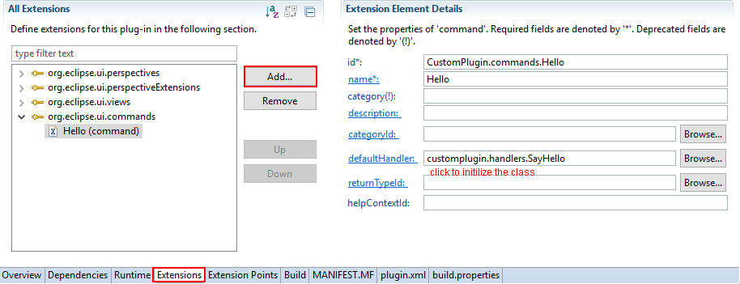2. Every command should have a handler which is responsible for making responses after calling the command from the menu. Add code to the default handler: customplugin.handlers.SayHello. When the user click the "Hello" menu, a "Say Hello" dialog will popup.
import org.eclipse.core.commands.AbstractHandler;
import org.eclipse.core.commands.ExecutionEvent;
import org.eclipse.core.commands.ExecutionException;
import org.eclipse.jface.dialogs.MessageDialog;
public class SayHello extends AbstractHandler {
@Override
public Object execute(ExecutionEvent event) throws ExecutionException {
// TODO Auto-generated method stub
MessageDialog.openInformation(null, "Say Hello", "Hello");
return null;
}
}
3. Add menu extension: org.eclipse.ui.menus. And add the menu contribution to the extension. The locationURI is important to control the position of the menu.
There are some examples of locationURI from the eclipse website:
- menu:org.eclipse.ui.main.menu?after=window -insert this contribution in the main menu after the Window menu.
- menu:file?after=additions-insert this contribution in the File menu after the additions group. Equivalent to the old menubarPath="file/additions".
- menu:org.eclipse.ui.views.ContentOutline?after=additions -insert this contribution in the Content Outline view dropdown menu after the additions group.
- toolbar:org.eclipse.ui.views.ContentOutline?after=additions -insert this contribution in the Content Outline view toolbar, after the additions group.
- popup:org.eclipse.ui.examples.propertysheet.outline?after=additions -insert this contribution in the Property Sheet outline page context menu after the additions group.
In the implementation of adding menu to a view, the locationURI should be "menu:" + view id. Here is menu:CustomPlugin.views.ExampleView1
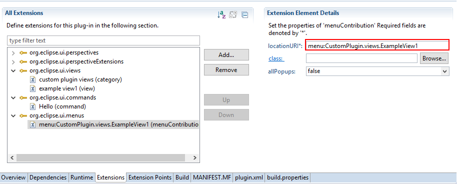4. Add command to the menu contribution, The command id is CustomPlugin.commands.hello
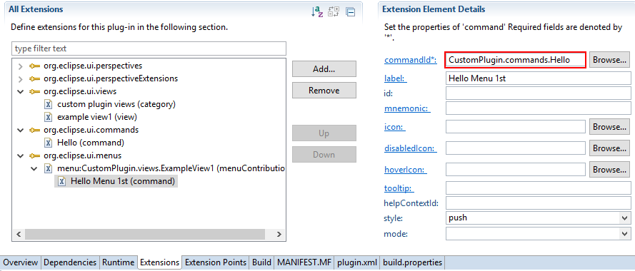5. Result
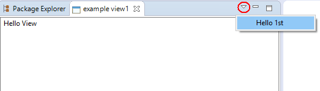 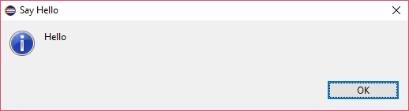Section 2: Add Drop-down List
In this section, a drop-down list menu will be added to the menu. And the secondary menu will also show a "Say Hello" dialog.
1. Based on the previous implementation, add "menu" to menu contribution and set the menu label to “Hello Menu 2nd”.
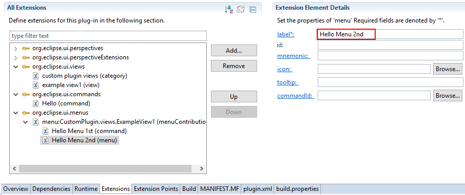2. Add command to "Hello Menu 2nd" menu. The command will become the secondary menu. We set the commandId to CustomPlugin.commands.Hello
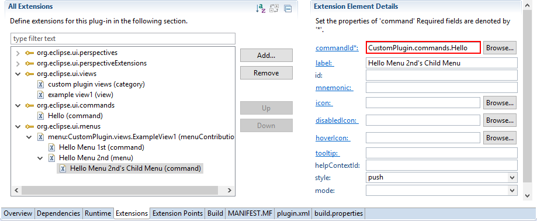3. Result
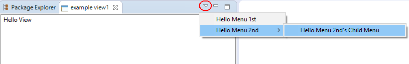Section 3: Add Toolbar
In this section, the "Hello" command will be added to the toolbar of the view.
1. Add a menu contribution to the org.eclipse.ui.menus extension. Set the locationURI to toolbar:CustomPlugin.views.ExampleView1.
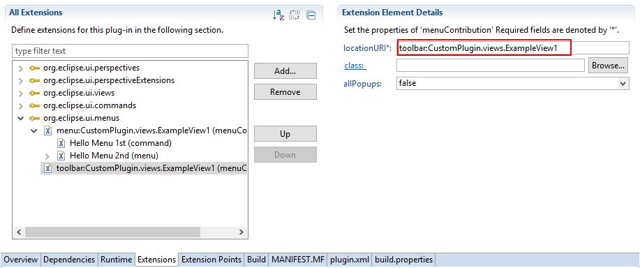2. Add the CustomPlugin.commands.Hello command to the menu contribution. Add set the icon to icons/sample.gif
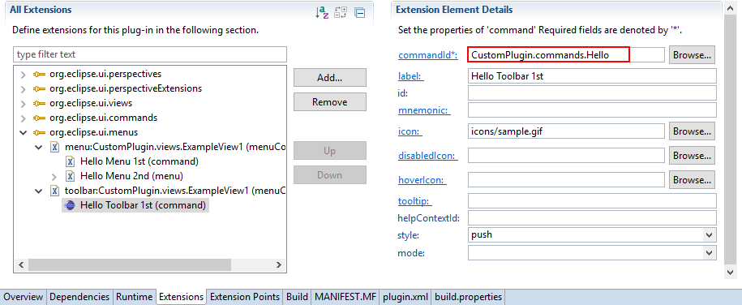3. Result
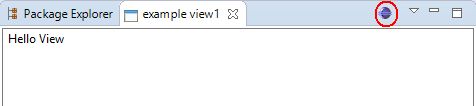